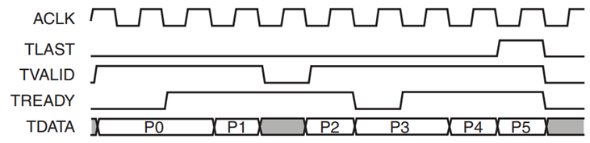

Introduction to Hardware Design
Usable
This lab description is complete. There could still be minor updates, which will be highlighted.
Introduction
The purpose of Lab 1 is to introduce you to systematic hardware design. The lab has a refresher of the hardware design flow from EE2026. Lab 1 can be done on any version of Vivado/Vitis without issues. Lab 1 does not require the FGPA board - it is pure simulation.
You will be doing an assignment that involves creating a coprocessor for matrix multiplication. Testing on real hardware will require a complete computer system (hardware-software co-design framework), which will be introduced in Lab 2. The actual integration will be done in Lab 3. When integrated into the system, the main processor can just stream the data to be processed to the coprocessor, which will do the computations and stream the results back to the main processor.
Creating and Simulating HDL Sources and Programming FPGA
Those who are already familiar with Vivado and FPGA implementation can skip this step and go straight to the assignment problem. Others can refer to the CS2100DE Lab 1 manual, which contains step-by-step instructions for the creation of HDL files, simulation, and FPGA implementation. The FPGA used in this course is different from that used in CS2100DE, so the input/output pin numbers to be used in the .xdc file are different.
Introduction to AXI Stream
The coprocesor (accelerator IP) that we create needs to be interfaced with the rest of the system for the processor to make it act as a coprocessor. The interface of an accelerator can be
-
Register-based: The processor can read and write the registers within the coprocessor to write inputs/read outputs - each register has an address within the address space of the processor. The parameters and return values are mapped to these registers/addresses. For example, the elements of an input vector/matrix A which has a depth (number of elements) of 512 and width (number of bytes/element) of 4 has address in the range peripheral_base + A_offset + 4*element_index (remember memory-mapped I/O from EE2028?). 4*element index will in this case will be in the range 0x000 to 0x800. The base address of the coprocessor peripheral is assigned in Vivado under the address tab. The coprocessor typically has an Advanced eXtensible Interface (AXI4 - supports burst transfers - faster for bulk data transfer, but requires more hardware) or AXI Lite interface which can be connected to the AXI bus of the system as a slave.
-
Stream-based: There are separate input and output streams through which the data is streamed in/out. There is no concept of addresses, and the meaning of the data is derived from the order of the data (and possibly some 'tags'). For example, if we have two input vectors A and B of sizes 512 and 8 respectively, the first 512 words correspond to A, the next 64 correspond to B, and so on. Please read the Introduction to AXI Stream below.
-
Memory-based: The co-processor reads inputs from / writes output to memory directly.
The hardware we are going to develop makes use of the AXI Stream interface to simplify the data receiving and sending processes. The AXI-Stream (AXIS) channels are 32-bit (can be higher), synchronous, master-slave, simplex (uni-directional flow of data per channel), point-to-point (only 2 devices are involved - no addressing needed) communication interfaces. A typical coprocessor needs one AXIS channel for inputs (AXIS Slave) and one AXIS channel for outputs (AXIS Master). AXIS coprocessors can't be connected directly to the AXI4 memory-mapped bus and requires some form of a bridge such as AXI Stream FIFO or AXI DMA.
To see more on AXIS here.

The AXIS bus protocol is illustrated below (taken from the document in the link above).
Data transfer is always from a Master interface to a Slave interface. This means a hardware block will receive data (input) through its slave interface (let's call it S_AXIS), and send data (output) through its master interface (let's call it M_AXIS).
TVALID is an indication from the master to the slave that the data placed by the master on TDATA is valid.
TREADY is an indication from slave to master that the slave is willing to accept data. The slave should capture the data at the very next active clock edge if TVALID and TREADY are both true. However, the master is not obliged to send any data simply because TREADY is asserted by the slave.
TLAST is an indication from the master to slave that the current data word is the last. TLAST is considered a sideband signal and is optional for AXIS. All the other signals mentioned above are essential signals for AXIS. It is useful in scenarios where the slave doesn't know exactly how many data words are sent by the master and is required if the slave is AXI Stream FIFO or AXI DMA, as these IPs (we will see in Lab 3) expect it.
Other sideband signals such as TSTRB and TKEEP may need to be asserted by the master if the slave expects it - we will see later that AXI Stream FIFO doesn't, AXI DMA does.
Assignment 1
Assignment #1 is a homework exercise that involves creation and testing of an AXIS Matrix Multiplication Coprocessor and carries 7 marks.
AXIS Matrix Multiplication Coprocessor
Let A be an m × n matrix of your choice, containing elements between 0 and 127, each value represented as an 8-bit unsigned number. The coprocessor receives the elements of A as 32-bit numbers, of which the most significant 24-bits are 0sᶿ, one element per clock cycle through S_AXIS_DATA following the AXIS bus protocol. You can assume a row-major order, i.e., the first n values received are elements of the first row, the next n values elements of the second row, and so on. For now, let us assume that m = 2 and n = 4.
Let B be an n × 1 matrix of your choice, received through S_AXIS_DATA in a similar manner as A, after all the elements of A have been received. In other words, the first m*n elements belong to matrix A, and the next n elements belong to matrix B.
The coprocessor needs to find the product of A and B and divide it by 256. i.e RES =(A * B) / 256. Naturally, RES has to be an m × 1 matrix.
The elements of RES should be sent out of the coprocessor through M_AXIS_DATA following the AXIS bus protocol, one element per clock.
The system should be able to operate continuously. Soon after (doesn't necessarily mean the very next clock cycle; within 2-4 clock cycles is ok), the coprocessor should be able to receive the next set of inputs, i.e., the next A and B without the need to assert an external reset.
Your design should be such that it is easy to change matrix dimensions (m and n) with minimal effort. Ideally, it should be parameterized, but at the least should be designed in a flexible enough manner. The second dimension for B can be fixed to 1 for simplicity.
ᶿIn fact, the most significant 25 bits are 0s since the number is between 0 and 127. However, let us just stick to the principle that we are dealing with an 8-bit unsigned number. Think of the values you send as representing the fractional part alone in unsigned fixed-point notation (0.8 - 0 bits for the integer part and 8 bits for the fractional part), i.e., using an implicit scale factor of 256. This requires us to adjust the position of the point by dividing by the scale factor after multiplication. This adjustment is unnecessary for addition and subtraction. Does this ring a bell? In EE/CG2028 Assignment #1, you used a scale factor to avoid dealing with fractions. Same story here; the scale factor is 256 instead of a power of 10.
Coprocessor Logic
- You need to have two RAMs - one each for A and B, and one element of either A or B can be populated with the incoming element through S_AXIS_TDATA in the 'Read_Inputs' state. You can also split the 'Read_Inputs' state into two separate states for storing A and B.
- Once all the values have been stored into A and B RAM(s), you will need to assert the 'Start' signal to the Matrix_Multiply unit.
- The Matrix_Multiply unit reads A and B RAMs and computes the product/256, element by element. Each element of the result is written into the appropriate location in the RES RAM. Matrix_Multiply will assert a 'Done' signal when the computation has finished.
- You will need to populate the 'Compute' state during which your coprocessor waits for the 'Done' signal from the Matrix_Multiply unit.
- Once the 'Done' is received from Matrix_Multiply unit, the contents of RES RAM should be sent out through M_AXIS_TDATA in 'Write_Outputs' state.
- After this, the system goes back to 'Idle' state. Note that you do not have to reset the RAM contents. However, other counters, etc might need to be reset.
- 'Start' and 'Done' can be implemented /assumed to last for exactly one cycle.
Files / Templates
You can find all lab 1 files here.
-
myip_v1_0.v / myip_v1_0.vhd - top-level module implementing the AXIS coprocessor. Currently, it simply takes in 4 words over 4 cycles and returns their sum, sum+1, sum+2, and sum+3 over 4 cycles. You need to modify this appropriately to interact with RAMs and Matrix_Multiply unit. You should not modify the inputs/outputs of myip_v1_0.v / myip_v1_0.vhd, as they should follow the AXIS standard. Synthesizing this will yield 56 warnings (could change slightly depending on the version of the tool) which are expected since memory and matrix multiply units are not used in the template code.
-
memory_RAM.v / memory_RAM.vhd - memory to implement A, B, and RES. There is no need to modify this. It should be used as a component (you will need one instance for each RAM, with appropriate parameters used for width and depth) in myip_v1_0.v. It is fine to modify it if you really want to, as long as the read is synchronous.
-
matrix_multiply.v / matrix_multiply.vhd - a skeleton template for the actual matrix multiplication. Upon receiving the 'Start' signal, it reads from A and B RAMs, performs the fixed point multiplication, writes the result to RES RAM, and then asserts the 'Done' signal. This needs to be implemented properly and should be used as a component in myip_v1_0.v.
-
test_input.mem - test vector input to the coprocessor; used by the testbench (tb_myip_v1_0.v). The numbers in the file should be in hex (2 hex digits = 8 bits).
-
test_result_expected.mem - expected output to validate the output given by the coprocessor; used by the testbench (tb_myip_v1_0.v/vhd). The numbers in the file should be in hex (2 hex digits = 8 bits).
-
tb_myip_v1_0.v / tb_myip_v1_0.vhd - a self-checking testbench for the coprocessor (myip_v1_0). It tests the addition functionality as mentioned in the description for the original myip_v1_0.v/vhd above.
It reads in an input vector from test_input.mem and passes it to the coprocessor, gets the result vector from the coprocessor, and compares it with the expected result vector in the file test_result_expected.mem. The testbench does this for two different test vectors (cases). If the actual result vector tallies with the expected result vector for both the test vectors (cases), it will print a message 'Test Passed', else, it prints 'Test Failed'. Note that in this example, the input vector, result vector, and expected result vector are all having 4 elements per test case.
You can add the .mem files to the project and Vivado will automatically recognize it as a memory file and will add it under Simulation Sources > Memory File. Alternatively (i.e., instead of adding it to the project), you can specify the full path to the files in the testbench - use forward slashes for the path to the test files, even on Windows, kind of like URLs.
The testbench can be modified very easily to test the matrix multiplication coprocessor. You will also need to change the input and output .mem files appropriately. For each test case, you need to have a vector of 12 elements (8 for A and 4 for B) for input, and the expected result vector will have 2 elements (RES). A well-designed testbench is expected (not only for this lab but for all hardware parts you implement for EE4218). - You should do both behavioral simulation as well as post-synthesis functional simulation.
Verilog and VHDL files can be freely mixed. For example, you can use memory_RAM.v instead of memory_RAM.vhd as a component of myip_v1_0.vhd.
Submission Info
Demonstrate during your designated slot in Week 5.
Upload to Canvas within 1 hour of your demo the following. One submission per group is sufficient.
- A very short (<=2 pages) report explaining your system architecture, FSM, resource usage details such as the number of slices/LUTs, etc.
- The relevant files you have created/modified, not the entire project folder, including
- .v/.vhd (RTL and testbenches)
-
.txt/.mem files.
The files should be the ones used for the demo, not modified to fix issues that became apparent during the demo. It should be as a .zip archive, with the filename GroupNum_Lab1.zip.